Look
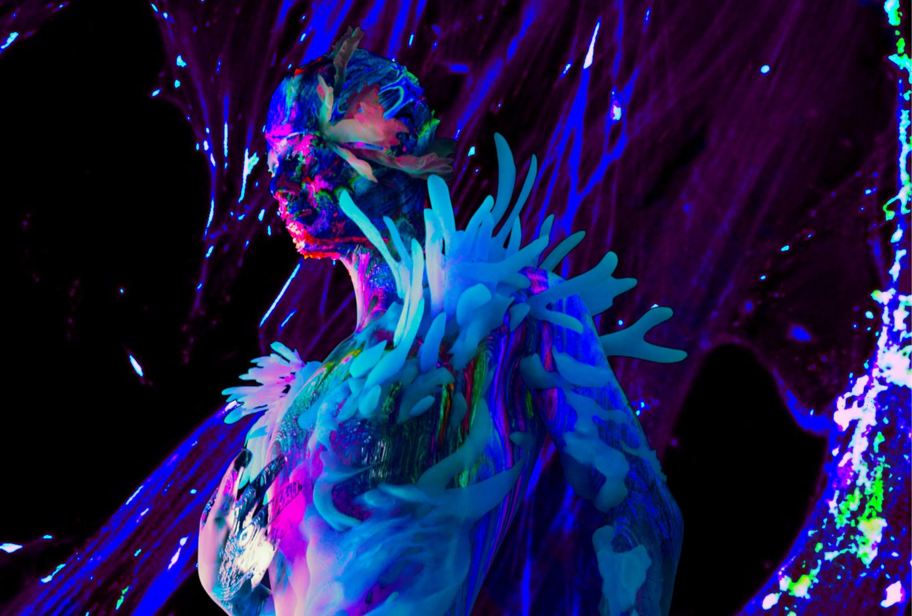
Look · New Human 3D character hero
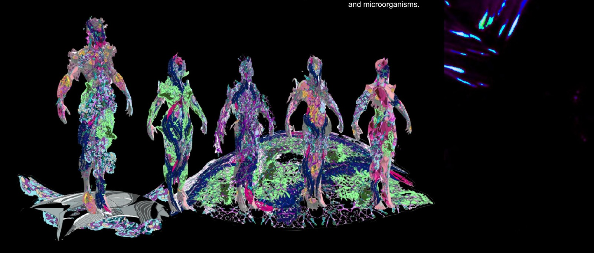
Look · Character lineup
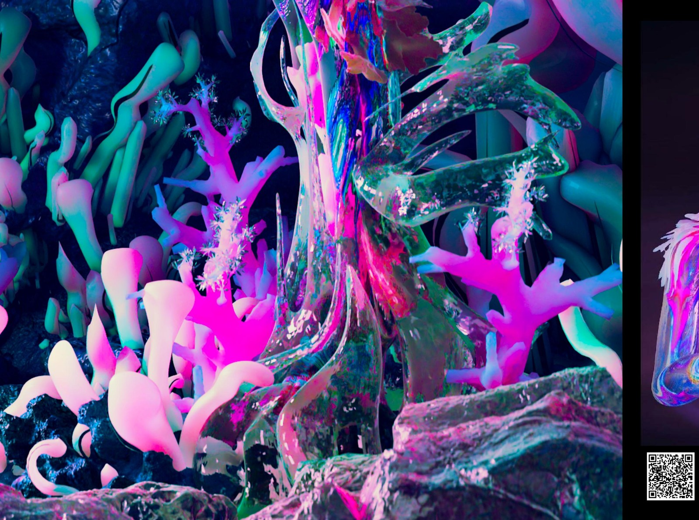
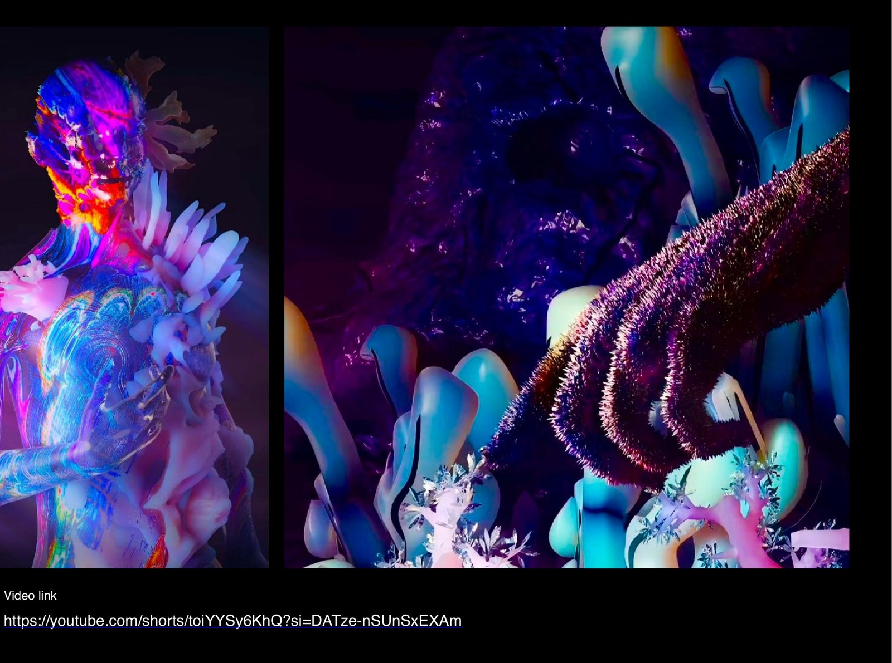
Look · Moving image / alternate frames
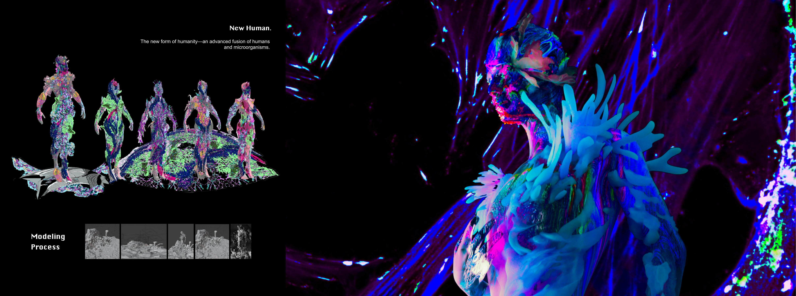
Lookbook · Hero board (HD)
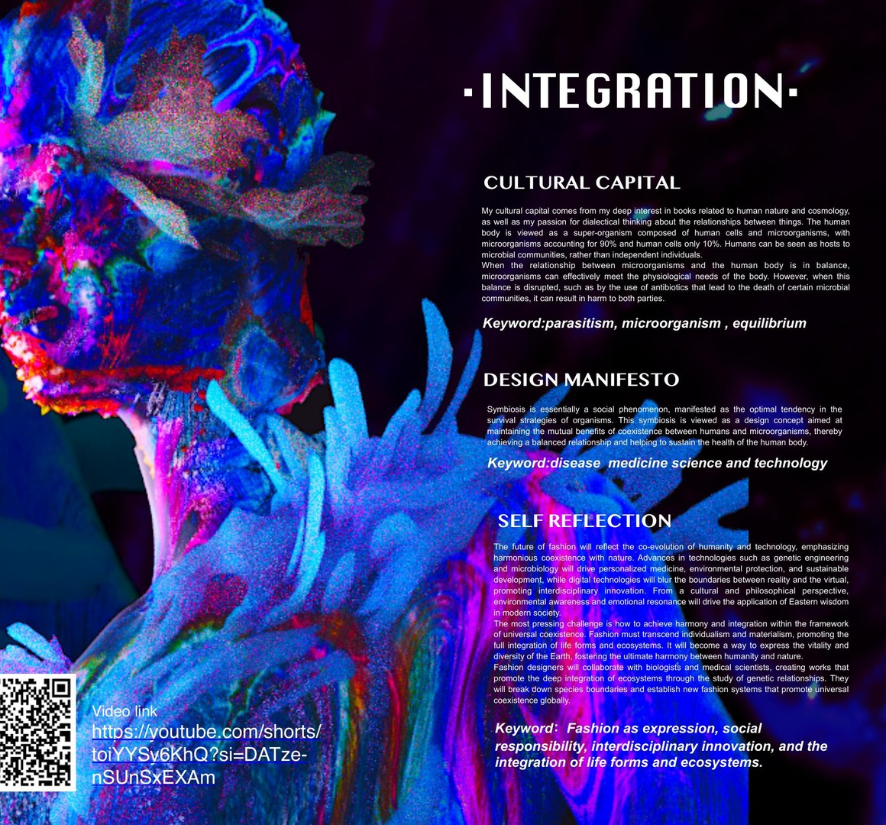
Look · Integration concept still
Process
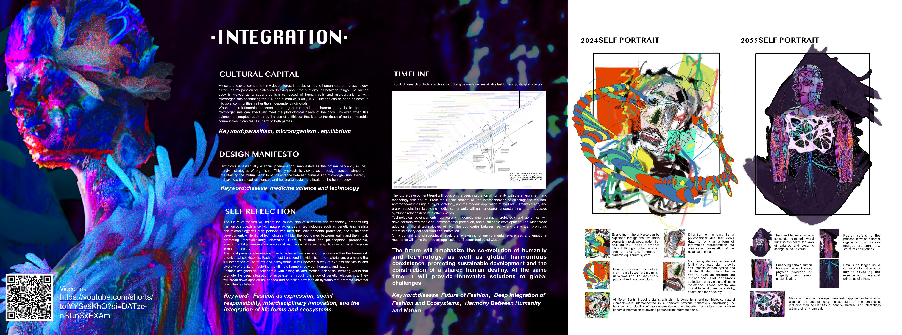
Process · Manifesto & 2024 / 2055 self-portrait
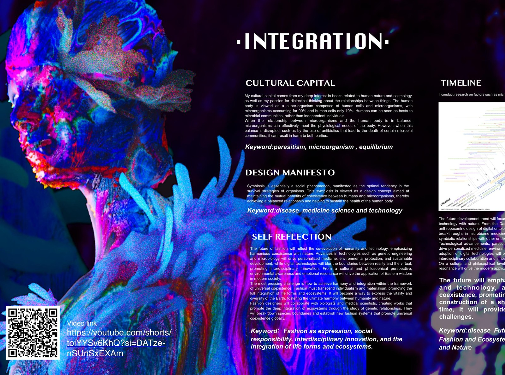
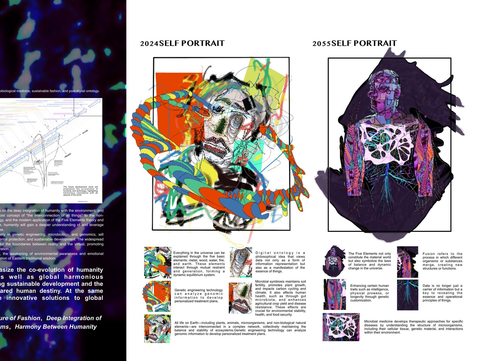
Process · Manifesto panel crops
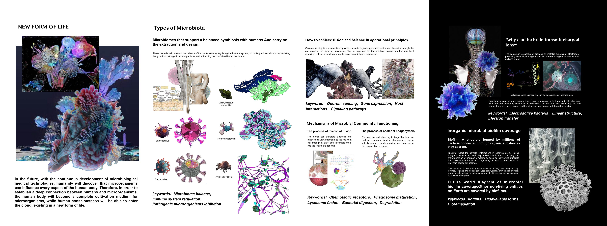
Process · New form of life · microbiota types
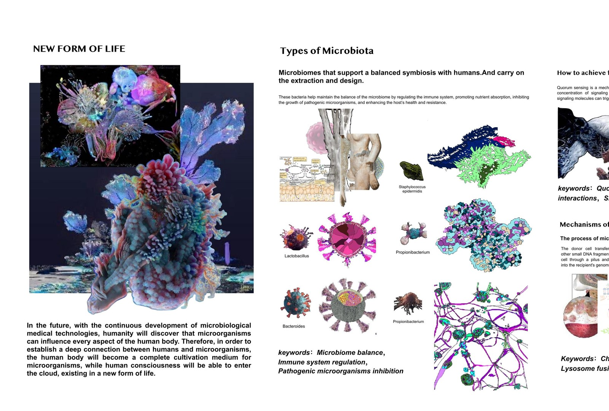
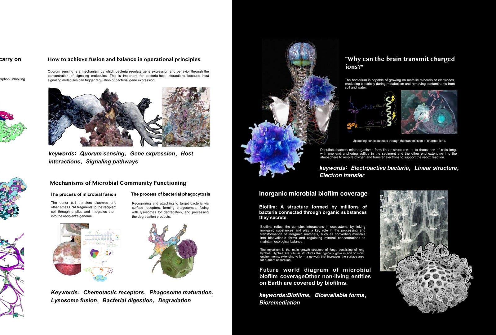
Process · Microbiota board crops
Detail

Detail · Integration concept board
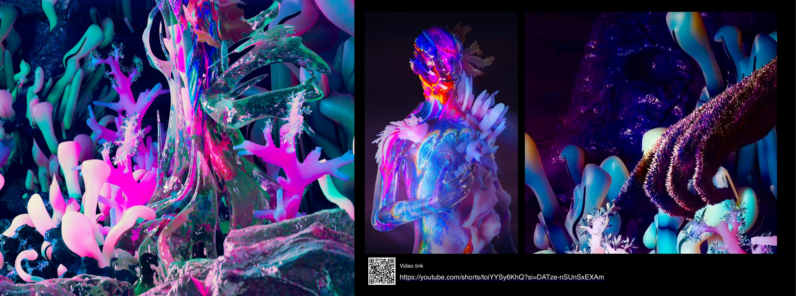
Detail · Moving image / project video